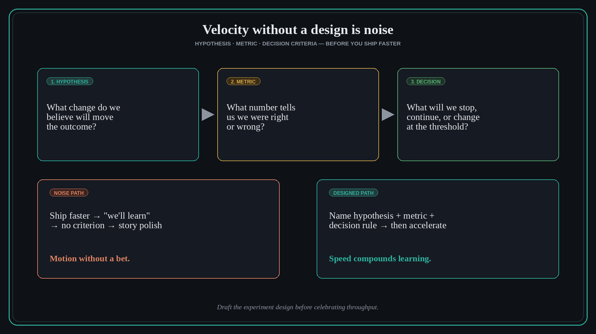

Velocity without a design is noise
Source: George (@nurijanian)
original post
What it claims
Shipping fast with a vague “we’ll learn from shipping” excuse is not experimentation. Before you accelerate, name a hypothesis, a metric, and decision criteria — including the stories teams tell themselves to skip rigor. Throughput without that design is noise: motion that does not compound learning.
Why it matters for a PO
Teams under delivery pressure celebrate story points and AI speed while skipping the bet. A PO who insists on hypothesis + metric + decide-rule turns velocity into evidence. Without it, reviews become narrative polish over unexplained charts.
3 takeaways
- Write hypothesis, metric, and decision criteria before the ship — not in the retro.
- Call out “we’ll learn by shipping” when there is no threshold for stop/continue/change.
- Speed is an amplifier: it multiplies good experiment design or multiplies noise.
Practice this week
Pick one in-flight change. In three lines: hypothesis, metric, and the decision you will make at a named threshold. If you cannot write them, pause the “faster” narrative until you can.